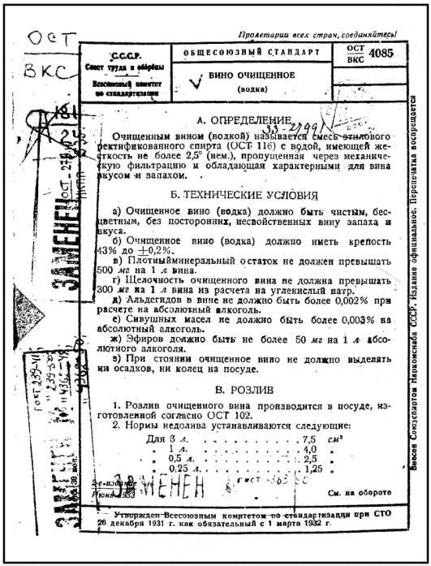

Окончательная утрата традиций

Хлебное вино и водка большевиков в 1920–1930-е гг.
В 1914 году в связи с началом Первой мировой войны продажа алкогольных напитков на основе спирта была запрещена. Пришедшие к власти в октябре 1917 года большевики сначала вовсе не собирались возобновлять их выпуск, так как априори предполагалось, что в новом обществе пристрастие рабочего люда к спиртному исчезнет как по мановению волшебной палочки по причине отсутствия социальных корней оного. Казалось, что общественное неравенство было устранено уже в 1917 году, а социальная неустроенность остается уделом остатков эксплуататорских классов.
Поначалу новая власть не собиралась заниматься сферой производства и потребления алкоголя. Декрет Совнаркома от декабря 1919 г. «О воспрещении на территории РСФСР изготовления и продажи спирта и не относящихся к напиткам спиртосодержащих веществ», в определенной мере подтверждавший «сухой закон» 1914 г., скорее был продолжением политики широкомасштабной национализации, нежели антиалкогольной акцией. Явной идеализацией облика рабочего класса была сопровождавшая запрет на продажу спиртного декларация об отсутствии у рабочих потребности в нем. Однако в полной мере утопические воззрения большевиков на возможность пополнять бюджет без торговли вином проявились после окончания Гражданской войны. В ленинской концепции социализма не было места спиртному как источнику добычи «легких денег». Об этом вождь прямо заявил на Х Всероссийской партийной конференции в мае 1921 г., а в марте следующего года с трибуны XI съезда партии вообще поставил вопрос
«о категорическом недопущении „торговли сивухой“ ни в частном, ни в государственном порядке» [322]
Лишить такую страну как Россия, крепкого алкоголя — это действительно утопия. На антиалкогольную политику властей народ ответил, как всегда в подобных случаях, массовым самогоноварением. (Кстати, о термине. Специальному изучению он в этой работе не подвергался, однако есть основания полагать, что он относительно поздний. В. В. Похлебкин утверждает, что его появление связано с введением царской монополии и датирует его 1894–1895 гг. По другим сведениям, термин «самогоноварение» впервые появился в декретах Временного правительства во время «сухого закона». По всей видимости, это ближе к истине. Так, в изданном в 1924 г. сборнике «Преступный мир Москвы» читаем:
«Самогонщики и самогонка — термины сравнительно недавнего происхождения» [323]
Термин «самогон» заменил существовавшее прежде «корчемное вино».)
«Ни к чему не приводили и попытки вытеснить самогон с помощью продажи пива и виноградных вин крепостью до 14 градусов. Хотя в 1923 г. ассортимент спиртных напитков был весьма широк (столовые и десертные вина, крепкие виноградные вина, портвейны и шампанское), но в основном горожане потребляли самогон и пиво (последнее стало любимым пролетарским напитком — в среде рабочих сложился стереотип ежедневного его потребления), тогда как потребление виноградных вин стояло на одном уровне с денатуратом и политурой» [324]
И большевики, естественно, сдались. Но прежде чем говорить о том, какую же водочную продукцию стали выпускать в Советской России, посмотрим, как обстояло дело в первые годы после революции с винокуренной промышленностью.
«За годы гражданской войны и иностранной интервенции винокуренные заводы… пришли в упадок. Советская власть поставила вопрос о возрождении винокуренной промышленности. Винокуренные предприятия были национализированы и переданы в ведение Центрального управления государственным винокурением и спиртоочищением (с 18.11.1918 г. — Центроспирт, с 06.09.1920 г. — Главспирт) в составе химического отдела ВСНХ РСФСР, а с 30.06.1922 г. — в ведение Центрального управления государственной спиртовой монополии (Госспирта) ВСНХ РСФСР. В 1921 г. в системе ВСНХ РСФСР были созданы главные управления по отраслям промышленности, а предприятия стали объединяться в тресты. В 1922 г. была проведена ревизия винокуренных заводов» [325]
Словом, так же как промышленность России в целом, винокурение пришлось возрождать практически из руин, тем более что винокурни и винные склады во время Гражданской войны были полностью разграблены. Так, в частности,
«из прежде существовавших (в пределах территории СССР 1927 г.) 1905 винокуренных заводов сохранилось только 523» [326]
Но так или иначе, а решение возобновить выпуск алкоголя, изготовленного на основе спирта, было принято. Правда, сразу начать производство сорокаградусных напитков не решились — по-видимому, трудно было «поступиться принципами». Принято считать, что первой советской водкой была так называемая «рыковка» (прозванная так в народе по имени тогдашнего председателя Совмина Рыкова) крепостью 30 градусов, которой предшествовал выпуск 20 %-ной «русской горькой».
Однако здесь у современных исследователей начинаются некоторые расхождения. Григорьева,[327] отмечая начало выпуска летом 1924 года 20 %-ной «русской горькой», утверждает, что ровно через год (то есть летом 1925 г. — Прим. авт. ) «разрешенная крепость наливок и настоек, а также коньяка и ликеров повысилась до 30 % по Траллесу».
И далее, не замечая противоречия, приводит запись из дневника М. А. Булгакова, сделанную в ночь с 20 на 21 декабря 1924 г.:
«В Москве событие — выпустили 30° водку, которую публика с полным основанием назвала „рыковкой“. Отличается она от „царской“ водки тем, что на десять градусов она слабее, хуже на вкус и в четыре раза ее дороже. Бутылка ее стоит 1 р. 75 коп.» [328]
А И. Б. Орлов настаивает на том, что
«продажа водки, получившей название „Рыковка“ от фамилии председателя правительства А. И. Рыкова, была официально разрешена декретом правительства 28 августа 1925 г.» [329]
Разбираемся в этой путанице с одной целью — понять, с каких же все-таки напитков начался выпуск крепкого алкоголя в СССР. В этом смысле на многое проливает свет весьма любопытный документ, выложенный на официальном сайте новгородского водочного завода «Алкон»[330]
«Открытие завода было связано с необходимостью борьбы с самогоноварением, для этой цели был выслан рецепт по изготовлению нового сорта водки (здесь термин „водка“ вполне употребим, так как речь идет об ароматизированном напитке, и для таких водок крепость была не лимитирована. — Прим. авт. ) крепостью 20 градусов под названием „Русская горькая“».
Сохранился рецепт приготовления «Русской горькой» (под грифом «Секретно»):
«Для приготовления 100 ведер „Русской горькой“ берется 5 литров отгона, полученного в перегонном аппарате из отработанных ингредиентов Английской Горькой с набором трав и кореньев для 100 ведер Английской Горькой после второго налива, в которые за несколько часов до перегонки следует добавить 5 литров ректификованного спирта. Перегонка может быть произведена в аппарате для отгонки спирта из отработанных ягод, трав, кореньев или даже в химической лаборатории в малых размерах. Желательно, чтобы крепость прогона была не выше 5 градусов. Чем крепче прогон, тем медленнее его надо прибавлять к спирту и воде, чтобы избежать образования мути. Если перегон будет вестись огневым способом, то необходимо принять все меры предосторожности в пожарном отношении. * 1,8 литра сахарного сиропа, * 0,6 литра специального состава, который будет высылаться Госспиртом, * 50 г лимонной кислоты, * 20,6 ведер ректификованного спирта. Все эти вещества задаются в купажный чан, разбавляются очищенной водой по наметке 100 ведер, и вся жидкость перемешивается. Для быстрого выравнения вкуса и аромата в купажный чан задается 20 фунтов мелко раздробленного березового или липового угля и размешивается с жидкостью. После стояния на угле в течение нескольких часов, жидкость обычным путем фильтруется. Если крепость окажется немного ниже 20 градусов, то перед фильтрацией её следует довести спиртом до этой крепости, если же крепость будет немного больше 20 градусов, то следует прибавить немного чистой воды».
Первая партия «Русской горькой» была приготовлена самым примитивным способом 9 октября 1924 года.
Первый выпуск настойки был распродан 10 октября 1924 года в открытом на Московской улице магазине Спиртозавода. С октября 1925 года завод выпускал «Русскую горькую» крепостью до 40 градусов, а в 1932 году завод перешел на выпуск «Пшеничной водки» крепостью 40 градусов.
Эта информация находит подтверждение в данных по другому водочному заводу — Иркутскому.
«…В апреле 1923 г. в Иркутске на базе Иркутского № 1 государственного винного склада был открыт Иркутский № 1 водочный завод. Ему был разрешен выпуск водочных изделий: наливок и настоек крепостью до 20°. 12 ноября 1924 г. завод был переименован в Ликеро-наливочный завод Госспирта № 1. С 1 июля по 20 декабря 1924 г. заводом было выпущено водочных изделий в 20° — 1658,5 ведер, с 20 декабря 1924 г. по 1 февраля 1925 г. было выпущено алкогольной продукции крепостью 26° — 23 ведра, 30° — 964 ведра. В ассортименте были следующие напитки: 30° — „Запеканка“, „Спотыкач“, „Английская горькая“, „Кофейный ликер“; 26° — „Вишневая“, „Облепиховая“, „Малиновая“, „Черносмородиновая“, „Клюквенная“. С 1 октября 1925 г. завод начал выпуск 40° водки по цене 1 руб. за бутылку (с этого же времени переименован в Иркутский спиртоводочный завод № 1). С 1 октября 1925 г. по 30 сентября 1936 г. завод выпустил 906 761 литр водки на сумму 1 343 988 рублей, 98 395 литров спирта, ректифицировано 47 206 литров спирта» [331]
Из этих материалов следуют достаточно интересные выводы:
1. Начиная с лета 1924 года до осени 1925 года в СССР производились только водочные изделия, а никак не водка в современном понимании. Сначала — крепостью до 20 %, а с декабря 1924 г. — до 30 %. Причем, надо полагать, ассортимент выпускаемых водочных изделий зависел от возможностей завода.
2. Пресловутая 30 %-ная «рыковка» не могла быть не чем иным, как той же самой «русской горькой», известной с дореволюционных времен, но изготовленной по упрощенной технологии и из доступных компонентов. Сравним с классическим рецептом (по Штритеру):
«Русская горькая (эссенция 1882 г.). Тонко измельчаются и смешиваются:
2,8 кг дягилевого корня, 2 кг калганового корня, 2 кг имбирного корня, 1 кг гвоздики, 1,3 кг черного английского перца, 0,4 кг турецкого перца стручкового.
Смесь заливается 33,8 л 50 % ректификованного спирта. Для приготовления белой русской горькой водки на 120 дкл изделия берется 0,1 л эссенции русской горькой. Водку выдерживают в течение недели, или же, при массовом производстве, пропускают через угольные фильтры и песочник и выпускают ее как „русскую горькую водку для знатоков“. Крепость „водки для знатоков“ — 40° по Траллесу, крепость „русской горькой“ — 37° по Траллесу» [332]
И еще интересная деталь: в 1924 г. «русскую горькую» на новгородском заводе предписывалось изготавливать из отработанного сырья для «английской горькой». Это может означать только то, что «английская горькая» выпускалась еще раньше, по-видимому, для «начальства».
Здесь, конечно, нельзя не сделать отступление по поводу знаменитого «водочного» диалога из «Собачьего сердца» Булгакова. Помните?
«Меж тарелками несколько тоненьких рюмочек и три хрустальных графинчика с разноцветными водками. Все эти предметы помещались на маленьком мраморном столике, уютно присоседившемся у громадного резного дуба буфета, изрыгавшего пучки стеклянного и серебряного света. Посредине комнаты — тяжелый, как гробница, стол, накрытый белой скатертью, а на нем два прибора, салфетки, свернутые в виде папских тиар, и три темных бутылки.
Зина внесла серебряное крытое блюдо, в котором что-то ворчало. Запах от блюда шел такой, что рот пса немедленно заполнился жидкой слюной. „Сады Семирамиды!“ — подумал он и застучал, как палкой, по паркету хвостом.
— Сюда их! — хищно скомандовал Филипп Филиппович. — Доктор Борменталь, умоляю вас, оставьте икру в покое. И если хотите послушаться доброго совета, налейте не английской, а обыкновенной русской водки.
Красавец тяпнутый — он был уже без халата, в приличном черном костюме — передернул широкими плечами, вежливо ухмыльнулся и налил прозрачной.
— Новоблагословенная? — осведомился он.
— Бог с вами, голубчик, — отозвался хозяин, — это спирт. Дарья Петровна сама отлично готовит водку.
— Не скажите, Филипп Филиппович, все утверждают, что очень приличная, тридцать градусов.
— А водка должна быть в 40 градусов, а не в 30, это во-первых, — наставительно перебил Филипп Филиппович, — а во-вторых, Бог их знает, что они туда плеснули. Вы можете сказать, что им придет в голову?
— Все, что угодно, — уверенно молвил тяпнутый» [333]
Для сегодняшнего читателя слово «водка» ассоциируется исключительно с современной водкой, а «английская» — уж не виски ли? А между тем в январе-марте 1925 года, когда было написано «Собачье сердце», водка в современном понимании в СССР еще не производилась, а виски в Москве тех лет даже представить невозможно.
Так что на столе у Филиппа Филипповича стояли в графинчиках русские дореволюционные «водочные изделия» — «русская горькая» и «английская горькая», правда, домашнего приготовления, например, по кулинарной книге Елены Молоховец. Ну, а упомянутая «новоблагословенная» — это все та же «русская горькая» в упрощенном варианте, которую в Москве выпускал бывший казенный винный склад № 1 (ныне завод «Кристалл»), расположенный на Самокатной улице, переименованной в 1924 году из улицы Новоблагословенной. Так что описанное Булгаковым — типичный пример «ушедшей натуры»…
1924–1925 гг. — время рождения последней по времени (советской) винной монополии. До этого ситуация была неопределенной. Винокуренные и водочные заводы были национализированы, но производство было остановлено. Кстати, по поводу даты рождения советской монополии у современных исследователей тоже имеются расхождения.
Сметнева:[334]«С 1923 г. ЦИК СССР и СНК СССР издали совместное постановление о возобновлении производства и торговли спиртными напитками в СССР. Это постановление вступило в силу с января 1924 г. Этот же год принято считать годом начала советской монополии, осуществлявшейся до 1992 г. Именно с 1924 г. начинается новая страница в развитии уже советской спиртовой и водочной промышленности»
(Заметим, что здесь Сметнева дословно цитирует В. В. Похлебкина, правда, без ссылки на источник.)
Григорьева:[335]
«В октябре 1925 года была произведена реорганизация спиртовой промышленности и установлена государственная монополия на производство и продажу крепких спиртных напитков. Производство хлебного вина стало исключительным правом государства и сосредоточилось на государственных заводах Госспирта, расположенных в разных районах СССР. Наиболее крупные действующие заводы находились в Москве, Курске, Саратове и некоторых других городах».
Вот что говорил по поводу такого поворота в «водочной политике» тов. Сталин на XIV съезде ВКП (б) в 1925 г.:
«Кстати, два слова об одном из источников резерва — о водке. Есть люди, которые думают, что можно строить социализм в белых перчатках. Это — грубейшая ошибка, товарищи. Ежели у нас нет займов, ежели мы бедны капиталами и если, кроме того, мы не можем пойти в кабалу к западноевропейским капиталистам, не можем принять тех кабальных условий, которые они нам предлагают и которые мы отвергли, — то остается одно: искать источников в других областях. Это все-таки лучше, чем закабаление. Тут надо выбирать между кабалой и водкой, и люди, которые думают, что можно строить социализм в белых перчатках, жестоко ошибаются» [336]
Впрочем, для нас совершенно непринципиально, какой именно год считать годом рождения советской винной монополии. Гораздо важнее то, что с 1925 г. в стране последний раз возник «призрак» хлебного вина. Именно с этого года разрешенная крепость спиртных напитков достигла 40 %, а на заводах Госспирта возобновился выпуск дореволюционного «казенного вина», той самой «монопольки» — чистой, без всяких добавок смеси спирта-ректификата с водой. Но так как слова «казенный», «казна» большевики не использовали, считая их «старорежимными», этот напиток стали в официальных документах именовать компромиссным названием «хлебное вино (водка)». Так впервые, в скобках, словом «водка» стали называть не только старые русские «водочные изделия», но и бывшее «казенное вино», которое, как мы с вами знаем, никакого отношения к традиционному русскому хлебному вину не имело. Таким образом, начиная с 1925 года понятие «водка» официально стало включать как «водочные изделия», так и чистую водно-спиртовую смесь. Правда, на этикетках эти изделия еще некоторое время — до тридцатых годов — разделялись. Большевики в начале своей монополии не выработали визуального образа своих алкогольных изделий и вовсю пользовались дореволюционными моделями бутылочных этикеток — как «монопольных», так и «частных». «Монопольные» использовались для чистой водно-спиртовой смеси, а «частные» — для водочных изделий.
В народе термин «хлебное вино» существовал до тех пор, пока он присутствовал на этикетках. В 1927 г. был впервые опубликован «Золотой теленок» Ильфа и Петрова, в котором есть замечательная сцена пожара в квартире номер три, прозванной «Вороньей слободкой»:
«Один лишь Никита Пряхин дремал на сундучке посреди мостовой. Вдруг он вскочил, босой и страшный.
— Православные! — закричал он, раздирая на себе рубаху. — Граждане!
Он боком побежал прочь от огня, врезался в толпу и, выкликая непонятные слова, стал показывать рукою на горящий дом. В толпе возник переполох.
— Ребенка забыли, — уверенно сказала женщина в соломенной шляпе.
Никиту окружили. Он отпихивался руками и рвался к дому.
— На кровати лежит! — исступленно кричал Пряхин. — Пусти, говорю!
По его лицу катились огненные слезы. Он ударил по голове Гигиенишвили, который преграждал ему дорогу, и бросился во двор. Через минуту он выбежал оттуда, неся лестницу.
— Остановите его! — закричала женщина в соломенной шляпе. — Он сгорит!
— Уйди, говорю! — вопил Никита Пряхин, приставляя лестницу к стене и отталкивая молодых людей из толпы, которые хватали его за ноги. — Не дам ей пропасть. Душа горит.
Он лягался ногами и лез вверх, к дымящемуся окну второго этажа.
— Назад! — кричали из толпы. — Зачем полез? Сгоришь!
— На кровати лежит! — продолжал выкликать Никита. — Цельный гусь, четверть хлебного вина. Что ж, пропадать ей, православные граждане?
С неожиданным проворством Пряхин ухватился за оконный слив и мигом исчез, втянутый внутрь воздушным насосом. Последние слова его были: „Как пожелаем, так и сделаем“» [337]
Между прочим, под словом «гусь» здесь имеется в виду вовсе даже никакая не птица. «Гусем» в народе называли монопольную «четверть», бутылку в 1/4 ведра, около 3 литров, которая благополучно дожила до ранних советских времен. А вообще-то сцена весьма символична — «хлебное вино», сгоревшее вместе с Никитой Пряхиным в пожаре русских революций…
В общем-то, на этом можно было бы и закончить историю русского хлебного вина, так как дальше начинается другая история — история советской водки. Но не будем спешить. Попробуем сначала ответить на два вопроса: первый — когда же термин «водка» окончательно пришел к современному понятию, избавившись от всяческих «параллелизмов» по отношению к хлебному вину, и второй — как получилось, что в ее составе стали допускаться вкусовые добавки, запрещенные в «казенном вине».
В конце двадцатых годов в Советской России начали активно заниматься стандартизацией выпускаемой продукции. Естественно, необходимо было разработать нормативные документы на производство крепких алкогольных напитков. Первым таким документом стал ОСТ/ВКС 4085. Надо полагать, что составители этого документа понимали, насколько нелепо звучит название «хлебное вино» применительно к смеси картофельно-зернового, а тем более паточного (которого в первые годы советской власти производилось очень много[338]) ректификованного спирта с водой. Видимо, поэтому снова возник термин «очищенное вино», который действительно был гораздо точнее. Так или иначе, но ОСТ 4085 (ВКС), разработанный в 1927 г. и вступивший в силу с 1932 г., именуется «Вино очищенное (водка)». По определению этого ОСТ
«очищенным вином (водкой) называется смесь этилового ректификованного спирта с водой, имеющей жесткость не более 2,5° (нем.), пропущенная через механическую фильтрацию и обладающая характерными для вина вкусом и запахом».
В. З. Григорьева[339] приводит в своей книге факсимиле титульной странички этого ОСТ. Для наглядности воспроизводим его и мы.

Как следует из этого документа, очищенное вино (водка) в тридцатые годы имело крепость 43 %. Почему? Видимо, имелись в виду те самые три градуса на «усушку и утечку», о которых в далеком 1853 г. писал академик Гесс:
«Между приемною и продажною крепостью вина существовала разность, которая по указанию многолетних опытов обращалась на покрытие в магазинах усышки и утечки вина. По точному определению оказалось, что разность эта составляет 3 % по Траллесу на полугар, и необходимо надлежит сохранить эту разность и на будущее время, для покрытия в магазинах усышки и утечки вина и спиртов» [340]
Окончательно слово «водка» стало, так сказать, «самостоятельным» и приобрело современный смысл с введением в 1936 г. ОСТ 279 (НКПП). Там слово «водка» (без всяких упоминаний хлебного или очищенного вина) определялось как
«бесцветная и прозрачная смесь этилового ректификованного спирта с водой, имеющей жесткость не более 2,5 немецких градуса, обработанная активированным углем, пропущенная через фильтры и обладающая характерным для водки вкусом и запахом».
Нормативная крепость также практически соответствовала сегодняшней — 40°, 50° и 56° (для сравнения — в действующем ГОСТе — 40–45°, 50° и 56°, а дореволюционная «монополька» — 40° и 57°).
При этом водки 50 и 56 градусов должны были выпускаться из спирта двойной ректификации, то есть были аналогами монопольного «столового вина». Правда, надо сказать, что водки 50° из спирта двойной ректификации выпускались в СССР еще с 1935 г., то есть до принятия ОСТ, при этом назывались они либо «водка по специальному заказу», либо «столовая водка». Последнее — явная реминисценция из монопольного периода.
Сравните две этикетки — 30-х и 50-х годов. Во-первых, на этикетке 30-х еще присутствует анахронизм «столовая водка», впоследствии отброшенный за ненадобностью. Во-вторых, очевидно, что в тридцатые годы стал вырабатываться собственно «советский» стиль этикеток, отличный от дореволюционного, — своеобразная смесь информативно-лаконичного «монопольного» с декоративным «акцизным». Для этого стиля характерно центральное положение слова «водка», которое становится композиционной доминантой.
Остается добавить, что разделение «питей» на два класса — «народный» и «столовый» — существовало при обеих монополиях — как царской (дореволюционной), так и советской. В Трудах Технического комитета за 1914 г. читаем:
«В. Э. Гаген-Торн высказал, что поднятый Л. С. Ивановским вопрос о том, что следует установить определенные требования для вина, весьма уместен при обсуждении вопроса об уменьшении количества угля. Если гнаться за мягкостью вкуса и стремиться к тому, чтобы казенное вино не уступало „смирновке“, то по примеру известных водочных заводчиков нужно употреблять значительные количества угля или же заменять их прибавлением поташа… Такие приемы были бы целесообразны для выделки столового вина. Что же касается народного вина, то едва ли нужно стремиться к тонкости вкуса жидкости, опрокидываемой в горло стаканами» [341]
А из «Технологической инструкции по ликеро-водочному производству» от 1971 года узнаем, что по аналогии с «народным» и «столовым» вином выпускались «водки типа „Водка“», для которых использовался
«ректификованный спирт высшей очистки из зерно-картофельного сырья, сахарной свеклы и мелассы» и «водки типа „Экстра“ из зерно-картофельного спирта высшей очистки».
Правда, в группе потребителей «элитарного» напитка произошло пополнение — иностранцы: для экспортной водки использовался исключительно «ректификованный спирт „Экстра“ из зернового сырья» [342]
Осталось разобраться с добавками к водно-спиртовой смеси, допускаемыми современным ГОСТом при изготовлении водок. (Вот список этих добавок по ГОСТ Р 51335: сахар-рафинад и сахар-песок рафинированный, натрий двууглекислый, кислота уксусная лесохимическая, кислота уксусная, кислота лимонная пищевая, кислота молочная пищевая, соль поваренная пищевая, калий марганцовокислый, молоко сухое обезжиренное, глицерин дистиллированный, крахмал картофельный, мед натуральный, ароматные спирты и настои, получаемые из ароматического растительного сырья и ректификованного спирта высшей очистки в соответствии с производственным технологическим регламентом на производство водок и ликеро-водочных изделий; эфирные масла, ароматизаторы, пищевые добавки и другие виды пищевых продуктов и материалов, разрешенные к применению в пищевой промышленности в установленном порядке.) Другими словами — практически можно применять все.
Еще раз вспомним, что до революции существовало жесткое разделение: вином считалась лишь чистая водно-спиртовая смесь, в которой отсутствовали любые примеси, не относящиеся к естественным, т. е. образующимся в процессе перегонки или хранения. При искусственном внесении любых добавок напиток становился «водочным изделием» с существенным повышением акциза. При разработке технологий изготовления «казенных питей» выяснилось, что
«частные фирмы, вино которых славилось, практиковали прибавление к вину в небольших количествах сахара, глицерина и т. п. примесей» [343]
Возник вопрос: не следует ли и при изготовлении «монопольного» вина использовать те же самые приемы? При всей внешней простоте проблема эта оказалась весьма щекотливой. Действительно, допустить официально в казенном вине искусственные добавки означает уничтожить разницу между понятиями «вино» и «водочное изделие», что фактически ведет к пересмотру всей сложившейся системы налогообложения. Если нет разницы между «вином» и «водочным изделием», за что же изготовители «нежинских рябиновых», «английских горьких», ликеров и пр. платят дополнительный налог? Оставить юридическое разделение этих понятий в силе — создать другую проблему: необходимость признать «столовые вина» производителей, практикующих использование добавок, «водочными изделиями», с соответствующим повышением акциза. А как доказать? Добавки настолько микроскопические, что проведение сколько-нибудь масштабных анализов обойдется казне в круглую сумму… Словом, проблема оказалась столь непростой, что
«большинство членов комитета, принимая во внимание сложность настоящего вопроса и признавая неудобным рассматривать его подробно в многолюдном заседании, находило необходимым… образовать комиссию для рассмотрения этого вопроса» [344]
В результате вплоть до 1914 г. вопрос этот так и не был решен: все оставалось «как есть». То есть «казенные пития» так и изготавливались без добавок,[345] в то же время на применение этих добавок частниками смотрели сквозь пальцы.
Использование добавок при изготовлении «питей» было узаконено лишь при большевиках. Это был абсолютно логичный шаг, после которого также абсолютно логичным было объединение дореволюционных горьких белых водок и бывшего «монопольного» вина в одну группу под общим названием «водки».
Тут нельзя не заметить, что даже в этом простом вопросе Вильям Васильевич Похлебкин умудрился навести тень на плетень. Цитируем:
«…производство советской водки было поставлено и все время находилось на высоком научно-техническом уровне. Все учёные-химики, занимавшиеся изучением физико-химических показателей русской водки, за исключением умершего в 1907 году Д. И. Менделеева, остались работать в Советской России и внесли свой вклад в дальнейшее совершенствование русской водки советского производства. Это были академик Н. Д. Зелинский, профессора М. Г. Кучеров, А. А. Вериго, А. Н. Шустов и А. Н. Грацианов. Так, М. Г. Кучеров ещё до революции обнаружил в столовом хлебном вине (водке), вырабатываемом заводом П. Смирнова в Москве, поташ и уксуснокислый калий, придававшие смирновской водке своеобразную мягкость, но вредно влиявшие на здоровье. Поэтому он предложил сделать на советских спирто-водочных заводах добавку к водке питьевой соды, которая, сообщая водке „питкость“, была не только безвредна, но и полезна для здоровья. А. А. Вериго предложил надёжный и точный метод определения сивушных масел в ректификате и ввёл двойную обработку водки древесным углем.» [346]
Так. Давайте по порядку. Профессора А. А. Вериго и М. Г. Кучеров в монопольный период заведовали Центральными лабораториями министерства финансов в Одессе и Санкт-Петербурге соответственно. Центральной лабораторией в Москве (всего их в империи было три) заведовал приват-доцент Дорошевский, а профессор (впоследствии академик) Н. Д. Зелинский состоял консультантом. Все эти ученые действительно принимали непосредственное участие в разработке технологии изготовления «монопольного» вина, точнее — были авторами этой технологии. Тем не менее в приведенном пассаже В. В. Похлебкина перепутано все, что только можно. «Надежный и точный» метод определения сивушных масел предложил вовсе не Вериго, а Кучеров. Причем этот метод носит его имя. Метод Кучерова для определения количества сивушных масел широко применялся в дореволюционной России наряду с методом Резе. Кучеров действительно обнаружил в смирновской водке поташ и предлагал его же (поташ), а вовсе не питьевую соду, использовать при изготовлении казенных питей.[347]
Вериго не «вводил двойную обработку водки древесным углем», а, совсем наоборот, предлагал отказаться от обработки углем водно-спиртовой смеси перед вторичной ректификацией.[348] Но самое интересное, что ни Кучеров, ни Вериго никак не могли «остаться работать в Советской России и внести свой вклад в дальнейшее совершенствование русской водки» по весьма уважительной причине: к тому времени оба они умерли. А. А. Вериго — 13 марта 1905 г.,[349] а М. Г. Кучеров — в 1911 г.[350]
К сказанному надо еще добавить, что эта путаница живет и процветает. Например, в работе «Винокурение в Приенисейском крае» читаем:
«Преемником самой дорогой монопольной водки „Столовое вино“ становится „Московская особенная“. Рецептуру монопольной водки модифицировал М. Г. Кучеров в 1924 году. Для лучшей питкости в нее стали добавлять пищевую соду (из расчета 30 мг на бутылку) и уксусную кислоту (из расчета 20 мг на бутылку» [351]
Однако вернемся к добавкам. Впервые они были разрешены приказом Центроспирта от 4 июля 1928 г. № 243. А в ГОСТе появились в 1936 г. — «ОСТ НКПП 279. Водка. 1936». Вот и вся история.
И последнее. Когда же все-таки появилась «Московская особая» и существовала ли ее предшественница — дореволюционная «Московская особенная»? Вспомним утверждение В. В. Похлебкина, впоследствии многократно растиражированное и превратившееся в нечто бесспорное:
«В результате проведенных исследований Д. И. Менделеева с конца XIXвека русской (а точнее — московской) водкой стали считать лишь такой продукт, который представлял собой зерновой (хлебный) спирт, перетроенный и разведённый затем по весу водой точно до 40°. Этот менделеевский состав водки и был запатентован в 1894 году правительством России как русская национальная водка — „Московская особая“ (первоначально называлась „Московская особенная“)» [352]
В том, что монополия не выпускала никакой «особенной» водки, да и вообще не выпускала напитка под названием «водка», мы с вами уже убедились. Кроме того, рецептура «монопольки» предусматривала картофельный и зерно-картофельный спирты, а вовсе не «зерновой (хлебный)». Так откуда же взялось название «Московская особенная»? У Елены Молоховец приводится рецепт «Водка белая Московская, старинная», но это явно не то: «50 г имбиря, 50 г калгана, 50 г шалфея, 50 г английской мяты — на все это количество налить 1 л спирта и поставить настаиваться на 18 дней. По истечении этого времени прибавить в эту настойку 1,85 л ключевой воды, перегнать через кубик и употреблять» — словом, типичное старое русское «водочное изделие». Гораздо ближе к теме вот это:
«Звездный час в истории водки приходится на вторую половину XIXвека, когда на российском рынке утвердились три кита водочной промышленности. Это были (по возрастанию качества): фирма Петра Смирнова (П. А. Смирнова), основанная в 1860-м году; фирма И. А. Смирнова, стартовавшая на два года позже, и фирма вдовы М. А. Попова, основанная в 1863-м. Лучшей из них считалась „поповка“, или „московская водка“, получившая в 1873-м году официальное название „особенной“. На этикетке так и значилось: „Водка московская (особенная) вдовы М. А. Попова“» [353]
Однако насколько этому источнику можно доверять? Глеб Шульпяков — писатель, а не ученый, и потому, естественно, никаких ссылок не приводит. Никакими другими доступными нам источниками эта информация — увы! — не подтверждается. А сомнения вызывает серьезные: например, выстраивание продукции московских водочных фирм «по возрастанию качества» — откуда у автора эта информация? Что он понимает под «качеством»? Какие виды продукции сравнивались и кем? Так что остается констатировать, что никакими достоверными источниками о существовании некой дореволюционной водки под названием «Московская особенная» мы не располагаем. Если кто-то из уважаемых читателей сможет представить какую-либо информацию о патенте, выданном правительству Российской империи на водку «Московская особенная», автор будет чрезвычайно признателен за подобные сведения.
Что же касается советской «Московской особой», то здесь ситуация несколько проще. Процитируем В. З. Григорьеву:
«…на Московском водочном заводе ее („Московскую особую“. — Прим. авт.) уже разливали в 1939 г. В ассортименте 1940 г. присутствуют водки 40 %, 50 % и 56 %), водка „Московская особая“ и спирт для питьевых целей, горькие и сладкие водочные изделия. Стандартизована „Московская особая“ была только в 1941 году. Она содержала 40 % (объемных) абсолютного спирта, сдабривалась уксуснокислым (уксусная кислота) и двууглекислым натрием (пищевая сода). Согласно ГОСТу 239–41 водка представляла собой „смесь этилового ректификованного спирта с водой, обработанную активированным углем и профильтрованную“» [354]
…Вот и подошла к концу история старого доброго русского хлебного вина. «Алкогольные» события в России конца XIX — начала XX в. легко укладываются (если, конечно, опустить подробности) в известную формулу «король умер — да здравствует король!». Правда, и сейчас кое-кто с тоской вздыхает, вспоминая это ласкающее слух словосочетание «хлебное вино». Правда, при этом добавляется: «эх, жаль, секрет утерян…» Полноте, господа! А как же подробнейшие руководства, оставленные нашими заботливыми предками? Там же все написано! Вот уж воистину «разруха в головах»…
История хлебного вина завершена, но книга продолжается. Нам еще предстоит понять, насколько реально вредны примеси, образующиеся при алкогольной дистилляции, и разобраться, наконец, со словом «водка» — когда оно возникло в русском языке и что обозначало за века своего бытования.
Словом, следующая глава — о примесях.